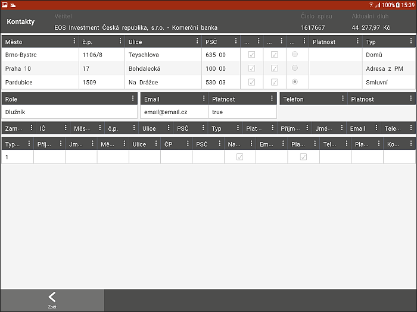

Tato podzáložka obsahuje všechny kontaktní informace týkající se dlužníka - Adresy, Telefonní čísla, Emaily, Zaměstnavatele a jejich kontaktní osoby.
Zneplatnění jednotlivých adres, emailů či telefonů lze provádět z procesu (zápis z OSN) a nebo z webové aplikace.
Jeden zaměstnavatel může mít několik adres, několik kontaktních osob a každá může mít několik kontaktů. Zneplatněním adresy zaměstnavatele se automaticky zneplatní jeho kontakty. Není vedena historie zaměstnavatelů, pro IP bude zobrazen pouze jeden zaměstnavatel.
Každá adresa má radiobuton s názvem K osobní návštěvě (K OSN), který ukazuje, která adresa DL se automaticky přebere do plánování trasy. Adresu pro OSN lze měnit a vybraná se vždy přednastaví při plánování návštěvy. Nelze mít zaškrtnuty dvě adresy.